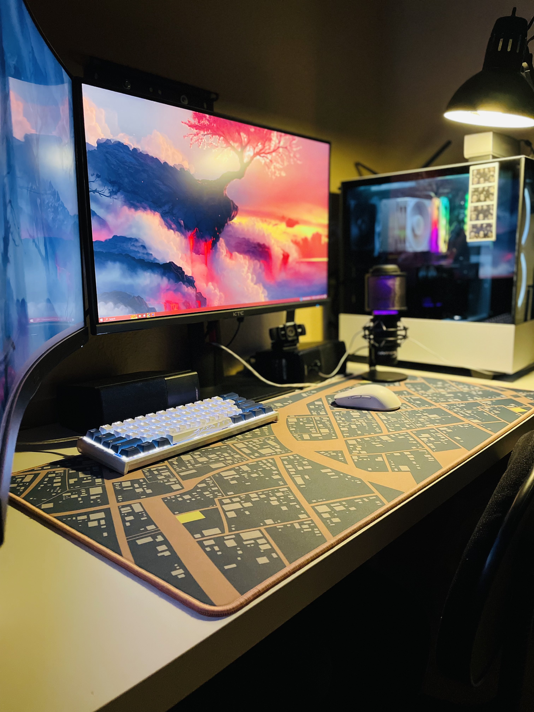

DANIEL DOCUS
Hello there,
I'm Daniel.
Welcome to my landing page.
I'm Daniel.
Welcome to my landing page.

Intro:
In this page, you will learn more about me and my journey as a Web Developer. My name is Daniel Docus, I was born in Honolulu, Hawaii on April 13th, 2002. Though I lived there for five years, most of my life has been in Las Vegas, Nevada, which is my current home. I've been studying Web Development on my own and decided to take Correlation One's Software Development Program to further my knowledge and push my future towards a career that I will enjoy.About Me:
One of the things that I enjoy doing during my leisure time is playing video games! It is something that has been apart of my life since I was a child. Games that I enjoy playing are (but not limited to): League of Legends, Honkai: Star Rail, Deep Rock Galactic, Gunfire Reborn, The Division 2, and many more. Besides video games, I enjoy playing guitar! I picked it up during highschool and ended up learning a few of my favorite songs! (Here's my Gaming Setup! --- >)